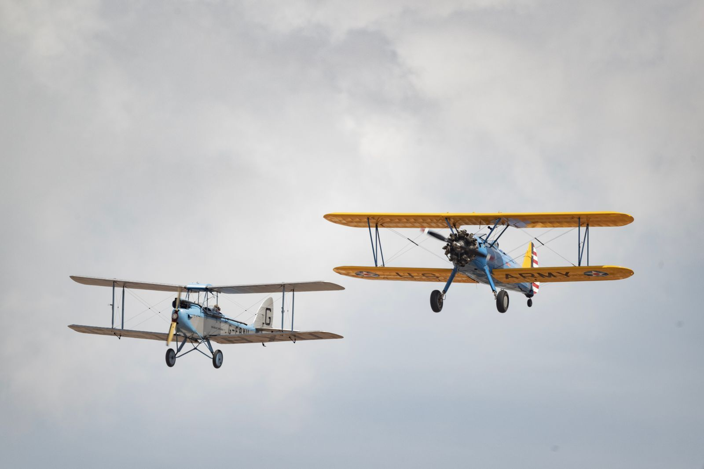
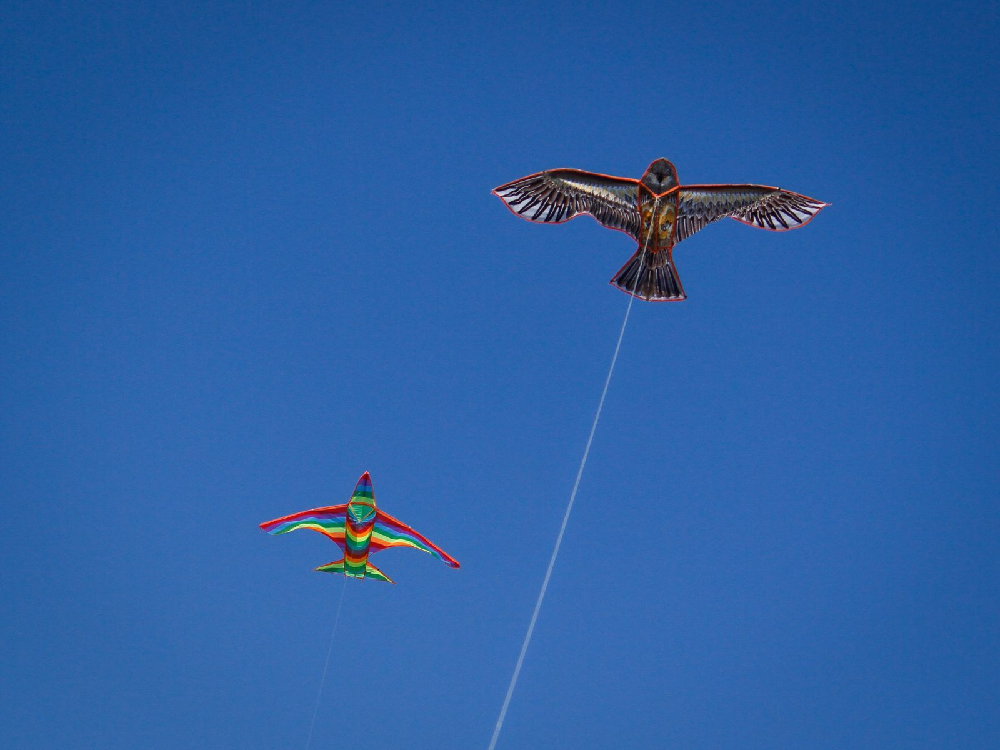
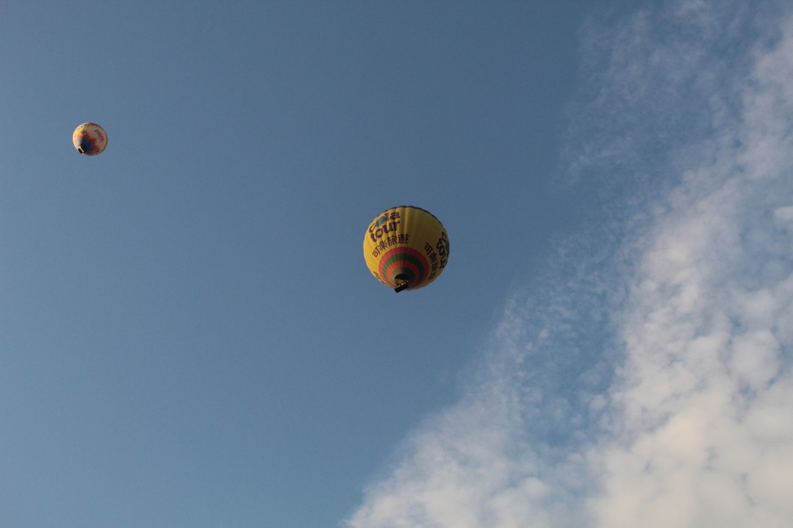
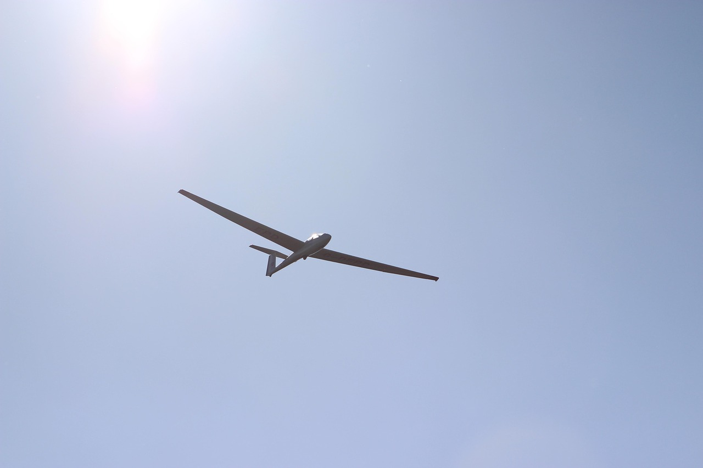

Chapter 7
A short history of flight
From kites and balloons to gliders, the first airplane and the paper plane contests.
From a kite in China to a jet faster than sound, step by step.

7.1 Timeline: up to 1903
Read the dates down the page. Each one is a step that someone took before you.
- 5th century BCE, or laterKites in China. Tradition credits the thinkers Mozi and Lu Ban. The earliest written account is later, about 200 BCE1,2.
- About 875In Córdoba, in what is now Spain, Abbas ibn Firnas is said to have jumped with wings and landed hard. The story was written down centuries later3.
- About 1505Leonardo da Vinci fills a short codex with studies of how birds fly4.
- 21 November 1783Pilâtre de Rozier and the Marquis d’Arlandes make the first free flight by people, in a Montgolfier balloon over Paris7,8.
- 1799George Cayley engraves a silver disc with a fixed wing, a body and a tail: the first modern idea of an aeroplane12.
- 1853A full-size Cayley glider carries a man across a valley, the first recorded glider flight with a person aboard11.
- 1884Near St Petersburg, Alexander Mozhaysky’s steam monoplane leaves a ramp. Whether it really flew is still argued17.
- 1886 to 1894Paper aeroplanes appear in print: in a children’s magazine in 1886 and in an aviation book in 189448.
- 1891 to 1896Otto Lilienthal makes close to 2,000 glides in 16 designs. He dies after a crash on 9 August 189615,16.
- 17 December 1903Orville and Wilbur Wright make four flights at Kitty Hawk. The first lasts about 12 seconds and the last 5922.
7.2 Kites, a leap, a notebook

Long before engines, people tied a wing to a string, jumped with wings on their arms and drew machines in notebooks.
Tradition names Mozi and Lu Ban, in the 5th century BCE, as the first kite makers in China. The earliest written account is later: Guinness gives about 200 BCE. The Library of Congress adds that kites in the Pacific almost certainly came earlier1,2.
Around 875, in Córdoba, the inventor Abbas ibn Firnas is said to have built wings and jumped. He came down hard and hurt his back. He later said he had forgotten to give himself a tail3.
About 1505 Leonardo da Vinci wrote his Codex on the Flight of Birds. He drew wing-flapping machines, but a human has too little muscle to flap a wing like a bird4.
7.3 Balloons over Paris

In 1783 a sheep, a duck and a rooster flew first. Two months later, people followed.
On 19 September 1783 the Montgolfier brothers sent up a hot-air balloon from the palace of Versailles, in front of King Louis XVI. A sheep, a duck and a rooster rode in a wicker basket. About eight minutes later they came down in a wood, alive5,6.
On 21 November 1783 Jean-François Pilâtre de Rozier and François Laurent d’Arlandes made the first untethered flight by people, in a Montgolfier balloon. They took off from the Château de la Muette in Paris7. A tethered test with Pilâtre de Rozier aboard came on 15 October8.
A balloon is not a wing. It floats and goes where the wind goes. It does not glide.
7.4 Cayley and Lilienthal

Before an engine could carry a wing, someone had to learn what the wing does.
In 1799 George Cayley engraved a silver disc. One side shows a fixed wing over a boat-shaped body, with a tail. Britannica says it set out the modern idea of an aeroplane: a fixed wing, with separate parts for lift, push and control12,11.
His work ended in 1853 with a full-size glider that carried his coachman, the first recorded manned glider flight. Another source says it flew about 900 feet across Brompton Dale11,14.
Otto Lilienthal flew from 1891. By 1896 he had made close to 2,000 flights in 16 glider designs15. He crashed on 9 August 1896 and died the next day16.
7.5 Mozhaysky and Zhukovsky
One man built a steam-powered plane. Another worked out, with pencil and paper, why a wing lifts.
In 1884, at Krasnoye Selo near St Petersburg, Alexander Mozhaysky tested a large monoplane with steam engines. It could not take off from level ground, so it was launched down a sloping ramp. Early reports say it tipped onto one wing and crashed; later accounts say it made a short hop first17.
Nikolai Zhukovsky studied how air flows. In 1895 he visited Otto Lilienthal in Berlin and bought one of his gliders. In 1906 he published a rule for the lift of a wing: lift depends on the air, the speed and a swirl of air around the wing19.
In 1918 he founded TsAGI, Russia’s Central Aerohydrodynamic Institute, and became its first head. TsAGI calls him the father of Russian aviation20,19.
7.6 Kitty Hawk, 1903

Four flights in one morning, and the longest was under a minute.
On 17 December 1903 Wilbur and Orville Wright made the first powered, controlled flights of a heavier-than-air machine, at Kitty Hawk, North Carolina. The first took off at 10:35 in the morning22.
They took turns. Orville flew about 12 seconds and 120 feet, 37 m. Wilbur flew about 175 feet, then Orville about 200. Last, Wilbur flew 852 feet, about 260 m, in 59 seconds22,23,24.
They sent a telegram home to their father. On the way, 59 seconds became 57, and Orville’s name was misspelled25. They had built gliders first. The engine came last.
7.7 Timeline: 1906 to now
After Kitty Hawk, flight grew up fast. Here are the next hundred years.
- 1906In Moscow, Nikolai Zhukovsky publishes a rule for the lift of a wing19.
- 12 November 1906In Paris, Alberto Santos-Dumont of Brazil flies his 14-bis 220 m in 21.5 seconds, while officials watch26.
- 13 May 1913Near St Petersburg, Igor Sikorsky flies the Grand, a giant with four engines30.
- February 1914Sikorsky’s next giant, the Ilya Muromets, lifts 16 people and a dog30.
- January 1923At Getafe, near Madrid, Juan de la Cierva’s autogiro first leaves the ground under a rotor that the wind turns. On 31 January it flies a closed circuit of more than 4 km33,34.
- 14 October 1947Chuck Yeager flies the Bell X-1 faster than sound42.
- February 1967A Scientific American contest draws 10,941 paper plane entries from 49 US states and 26 other countries50.
- 31 December 1968The Soviet Tu-144 becomes the first supersonic airliner to fly43.
- 2 March 1969Concorde flies for the first time, from Toulouse45.
- 2003The last Concordes retire45.
- NowPaper planes have records for distance and for time aloft. Chapter 9 lists them.
7.8 Paris, 1906: the 14-bis
A Brazilian in Paris lifted off the grass while officials stood ready with their stopwatches.
On 12 November 1906 Alberto Santos-Dumont, from Brazil, flew his 14-bis 220 metres in 21.5 seconds, about 6 metres above the ground, in Paris26.
Officials of the Aéro-Club de France watched and measured it. It was the first flight in Europe longer than 100 metres29. A few weeks earlier, in October, the 14-bis had already hopped about 60 m28.
The Wrights flew three years earlier, on a lonely beach, with few people watching. That is why many people in Brazil call Santos-Dumont the first to fly. This book counts both: the Wrights made the first controlled powered flights, and Santos-Dumont made the first that officials measured in Europe.
7.9 Sikorsky’s giants
In 1913, in Russia, a young engineer flew a plane with four engines and a cabin.
On 13 May 1913, at ten in the evening, Igor Sikorsky took the Grand into the air from an airfield in St Petersburg. It had four 100-horsepower engines and wings 28 m across. It climbed to about 120 m, turned, climbed about 75 m more and turned again. It flew for 10 minutes30.
In August 1913 the Grand carried eight people for an hour. Sikorsky’s next giant, the Ilya Muromets, was bigger still. In February 1914 it lifted 16 people and a dog30.
In the summer of 1914 Sikorsky and his crew flew the Ilya Muromets from St Petersburg to Kyiv and back, about 2,600 km, putting out an engine fire on the way30.
7.10 Getafe, 1923: the autogiro
An engineer from Murcia wanted an aircraft that would not fall out of the sky. His answer was a rotor that spins by itself.
In 1919 Juan de la Cierva, from Murcia in Spain, saw his big biplane wrecked on its second flight. He set out to design a safer aircraft32.
His autogiro has a rotor on top that no engine turns. As the machine moves, air flows up through the blades and keeps them spinning, like a falling maple seed. If the engine stops, the rotor keeps turning and the machine comes down gently32.
In January 1923, at Getafe near Madrid, his C-4 left the ground for the first time. On 31 January it flew a closed circuit of more than 4 km in three and a half minutes, about 25 m up. The key was a hinge at the root of each blade, so it could flap up and down32,33.
7.11 Women who flew
In 1910 a Frenchwoman earned the first pilot’s licence ever given to a woman. Others soon followed, from Russia to Spain and the United States.
On 8 March 1910 Raymonde de Laroche, from France, became the first woman in the world to earn a pilot’s licence35. In August 1911, near St Petersburg, Lydia Zvereva earned licence number 31, the first won by a woman in the Russian Empire36.
A newspaper publisher told Bessie Coleman, from the United States, to learn to fly in France, where Black people met more respect. She went, and on 15 June 1921 she earned her licence, the first for an African American woman37,38.
On 15 September 1928, at Getafe near Madrid, María Bernaldo de Quirós became the first Spanish woman to earn a pilot’s licence39. On 20 and 21 May 1932 Amelia Earhart flew alone across the Atlantic without stopping, from Newfoundland to a farmer’s field in Northern Ireland, in about 15 hours. No woman had done it before41.
7.12 Faster than sound

In 1947 a small orange rocket plane flew faster than sound.
On 14 October 1947 Chuck Yeager flew the Bell X-1 at Mach 1.06, about 1,127 km/h, some 13,000 m up. A B-29 bomber carried it to about 7,000 m and dropped it; then its rocket engine fired. Its shape copied a machine-gun bullet42.
Airliners followed. The Soviet Tu-144 flew first, on 31 December 1968, about two months before the Anglo-French Concorde first flew on 2 March 196943,45.
Concorde cruised at about twice the speed of sound, between 17 and 18 km up, high enough for passengers to see the curve of the Earth. It crossed the Atlantic in under four hours45.
7.13 The paper plane joins in

Paper came from China, folding became an art in Japan, and children folded darts long before anyone wrote about them.
Court records credit Cai Lun with presenting papermaking to the Chinese emperor in 105 CE, though older scraps suggest paper began about 200 years earlier46. In Japan folding became an art: a book printed in Kyoto in 1797 shows how to fold linked paper cranes47.
Paper planes are harder to trace. A history project lists one in the children’s magazine St Nicholas in 1886, and paper darts in an 1894 book on flying machines by Octave Chanute48.
In February 1967 Scientific American ran a contest with 10,941 entries from 49 US states and 26 other countries. Frederick Hooven’s tissue-paper flying wing stayed up 10.2 seconds; Robert Meuser’s plane flew 89 feet, about 27 m50,51.